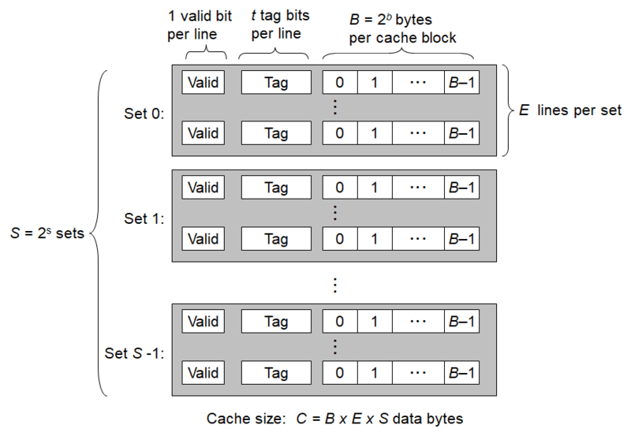
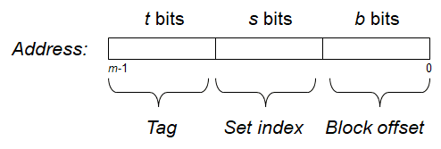

存储器层次结构
存储技术
存储技术主要有以下几种：
- SRAM，静态随机访问存储器，作为高速缓存存储器，断电信息丢失。
- DRAM，动态随机访问存储器，速度比SRAM慢，作为内存，断电信息丢失。
- 固态硬盘，大量数据的存储设备，基于闪存的存储技术，比DRAM慢，比磁盘快，断电信息不丢失。
- 磁盘，大量数据的存储设备，断电信息不丢失。
使用缓存的原因
- 存储技术：不同存储技术的访问时间差异很大。速度较快的技术每字节的成本要比速度较慢的技术高，而且容量较小。CPU和主存之间的速度差距在增大。
- 计算机软件：一个编写良好的程序倾向于展示出良好的局部性。
总的来说，存储器层次结构分为以下几个部分：
- L0，寄存器；
- L1，高速缓存（SDRAM）；
- L2，高速缓存（SDRAM）；
- L3，高速缓存（SDRAM）；
- L4，主存（DRAM）；
- L5，本地二级存储（本地磁盘）；
- L6，远程二级存储（分布式文件系统、Web服务器）。
缓存
一般而言，高速缓存是一个小而快速的存储设备，它作为存储在更大、也更慢的设备中的数据对象的缓存区域。使用高速缓存的过程称为缓存。
缓存可以分为多层。数据总是以块大小为传送单元在第k层和第k+1层之间来回复制的。虽然在层次结构中任何一对相邻层次之间的块大小是固定的，但是其他的层次对之间可以有不同的块大小。
高速缓存的通用组织如下图所示。


整个过程就是一个查找的过程，首先根据索引位，找到对应的组，然后根据标记位，找到组中对应的行，然后根据块偏移，找到对应的字节。
写缓存
写缓存的情况比较复杂，书上只讲了两组策略。如果已经缓存了，有以下的策略：
- 直写：立即将高速缓存写到低一层中。
- 写回：尽可能推迟更新，只有当替换算法要驱逐这个更新过的块时，才让它写回到低一层中。
如果没有缓存，也有两种策略：
- 写分配：加载相应的低一层的缓存到高速缓存，然后更新这个高速缓存。
- 非写分配：直接对低一层的缓存进行写操作。
对于程序员编程来说，我们心里应该采用写分配和写回的高速缓存模型。
高速缓存对程序性能的影响
高速缓存对程序的性能影响比较大，如缓存可能出现“抖动”，即高速缓存反复地加载和驱逐相同的高速缓存块的组，如果是虚拟内存作为缓存，被称为内存抖动，这种情况下，页面的频繁更换，导致整个系统效率急剧下降。
总的来说，这一章还是比较简单的，虽然实验的part B不太会。